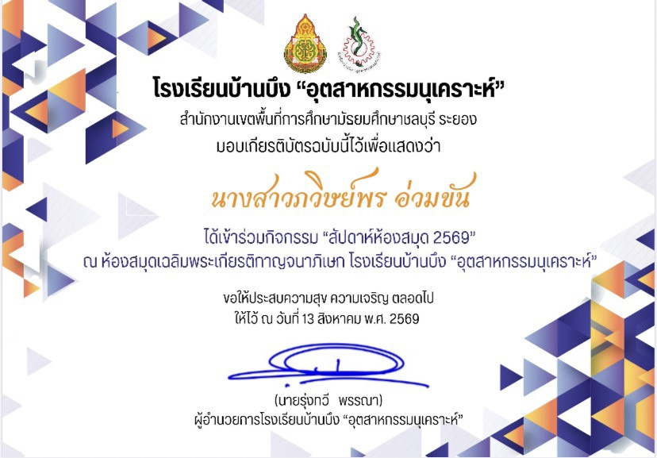
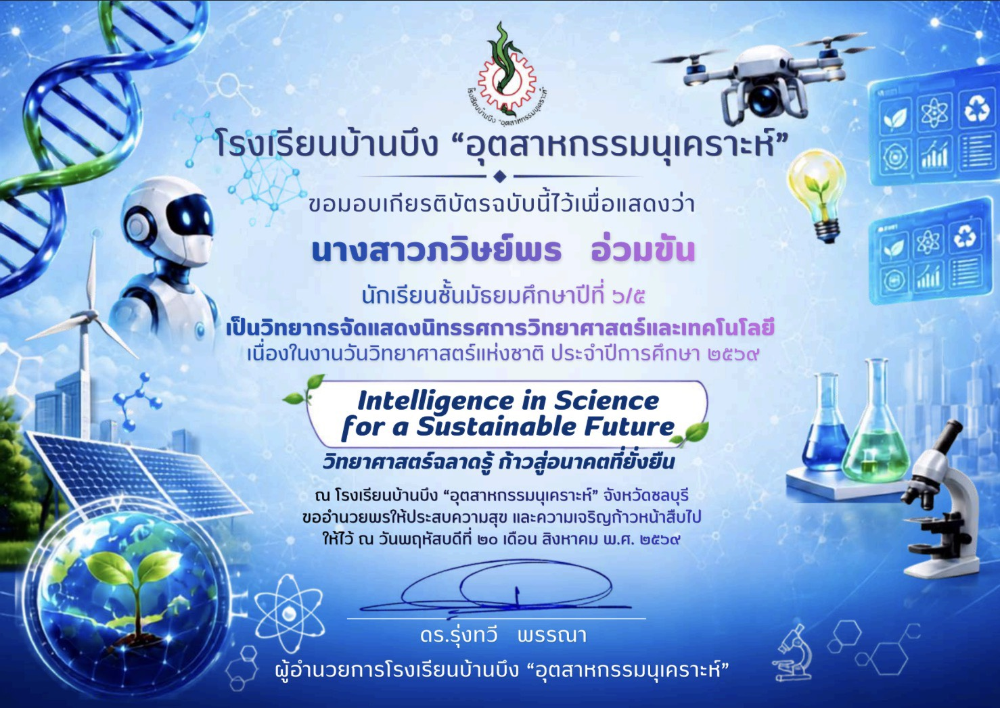
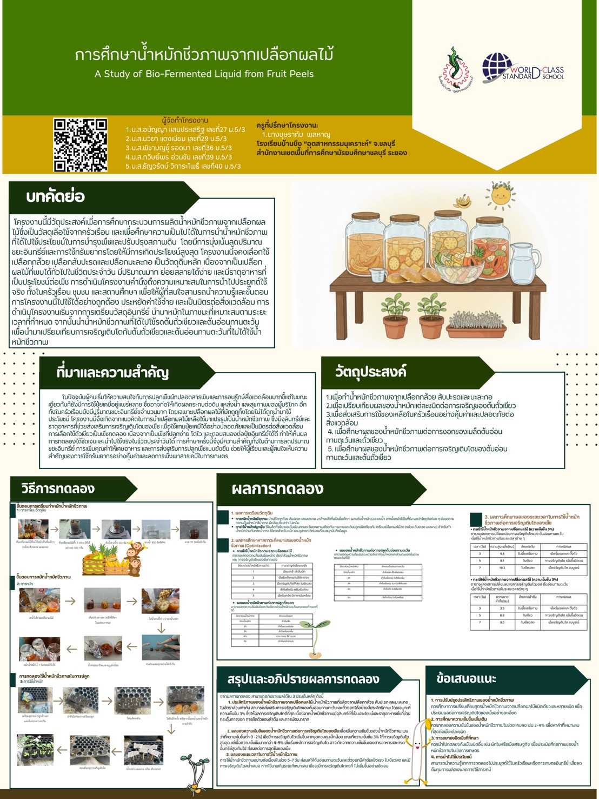

กิจกรรมสัปดาห์ห้องสมุด 2569
เข้าร่วมกิจกรรมสัปดาห์ห้องสมุด ณ โรงเรียนบ้านบึง “อุตสาหกรรมนุเคราะห์”
ACTIVITIES
ผลงานที่สะท้อนการเรียนรู้ผ่านการลงมือทำ และความสนใจด้านวิทยาศาสตร์

เข้าร่วมกิจกรรมสัปดาห์ห้องสมุด ณ โรงเรียนบ้านบึง “อุตสาหกรรมนุเคราะห์”

เป็นวิทยากรจัดแสดงนิทรรศการวิทยาศาสตร์และเทคโนโลยี เนื่องในวันวิทยาศาสตร์แห่งชาติ

ร่วมจัดทำโครงงาน “การศึกษาน้ำหมักชีวภาพจากเปลือกผลไม้”